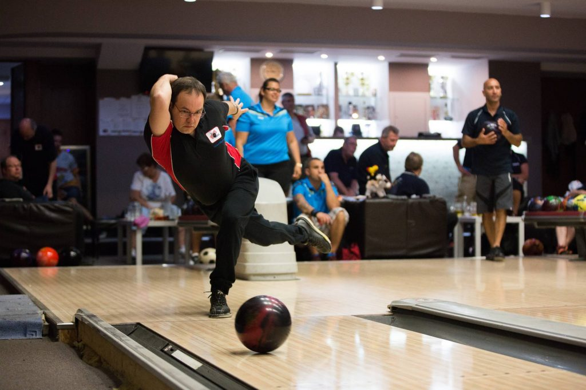

The History and Origins of Bowling
Bowling's earliest history is traceable all the way back to ancient Egypt. As early as 3200 B.C., early proto-bowlers fashioned balls from unusual materials such as stone, leather or even husks. They then attempted to knock down marble or stone "pins" with these objects. About 2,000 years ago, another primitive form of bowling became very popular within the Roman Empire. Roman soldiers frequently played their very rough form of the game (which was somewhat similar to the modern Italian game of bocce) during breaks from their martial duties.
Bowling enters the Middle Ages
Bowling as we know it today began to take shape around 400 A.D. in Central Europe, roughly where Germany is located today. Oddly, it didn't begin as a sport, but rather a medieval spiritual ceremony. Bowlers would set up wooden clubs or pins -- which symbolically represented demons -- at the end of a runway. The clubs would then be toppled by a rolled stone object. By knocking down the clubs, those throwing the ball would spiritually cleanse themselves. As the centuries rolled on, many changes occurred. Wood became the standard material used to create balls, the number of pins increased and the game began to more closely resemble its modern form. And as explorers began charting previously remote corners of the globe, the game would begin flourishing in the "New World" of North America.
Bowling in its Modern Form
The game we recognize today as ten pin bowling began exploding in popularity as German immigrants moved in huge numbers to the American Midwest. In an effort to codify basic rules and establish uniform equipment regulations, representatives from some of the country's largest bowling clubs organized the American Bowling Congress in 1895. With the invention of the first hard rubber ball just a few years later, in addition to automatic scoring and pinsetters, the sport of bowling was now poised to explode. Millions of people took up the sport recreationally, and the Professional Bowlers Association of America (PBA) was founded in 1958.
Today, the sport of bowling is enjoyed by 95 million people in more than 90 countries worldwide.
